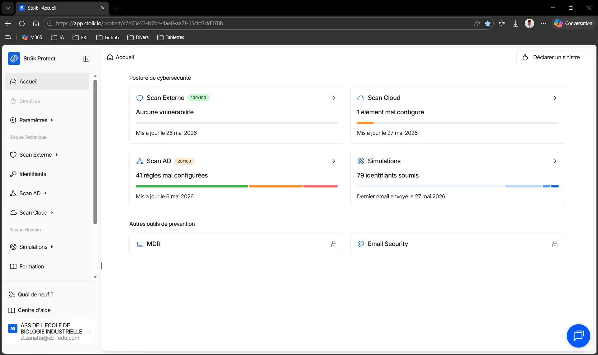

Dans le cadre de mon alternance au sein du service informatique de l’EBI, je participe au suivi d’une campagne continue de simulation de phishing menée avec la plateforme Stoïk Protect.
Cette campagne ne correspond pas à une attaque réelle. Il s’agit d’un exercice de sensibilisation permettant d’évaluer les comportements des utilisateurs face à des e-mails frauduleux simulés et d’identifier les personnes nécessitant un rappel des bonnes pratiques.
Mon rôle consiste à consulter les résultats de la campagne, identifier les utilisateurs ayant soumis leurs identifiants lors d’une simulation, leur envoyer un message de sensibilisation, puis assurer la traçabilité du suivi réalisé.
Objectifs
Accéder à la plateforme Stoïk Protect afin de consulter les indicateurs de cybersécurité.
Suivre les résultats de la campagne continue de simulation de phishing.
Identifier les utilisateurs ayant été hameçonnés lors d’un exercice.
Envoyer un message de sensibilisation aux personnes concernées.
Rappeler les bonnes pratiques de vigilance face aux e-mails suspects.
Mettre à jour un tableau de suivi afin de conserver une trace des actions réalisées.
Respecter la confidentialité des données personnelles dans les preuves intégrées au portfolio.
Environnement de travail
Structure d'accueil : EBI (École de Biologie Industrielle)
Service concerné : service informatique
Plateforme utilisée : Stoïk Protect
Outils complémentaires : Outlook, Microsoft Excel
Type d’action : suivi cybersécurité et sensibilisation utilisateur
Public concerné : utilisateurs ayant échoué à une simulation de phishing
Données suivies : destinataire, scénario, modèle de simulation, date de soumission et date de contact
Accès à la plateforme Stoïk Protect
La première étape consiste à me connecter à Stoïk Protect afin d’accéder au tableau de bord de cybersécurité de l’établissement.
L’interface fournit une vue d’ensemble de la posture de sécurité, notamment à travers différents modules comme les scans externes, le scan Active Directory, le scan cloud et les simulations.
Cette vue globale permet de vérifier rapidement l’état des principaux indicateurs avant d’accéder au suivi détaillé des campagnes de phishing simulé.

Consultation des résultats de la campagne
Depuis la plateforme, je consulte la campagne continue de simulation de phishing afin d’analyser les résultats des exercices envoyés aux utilisateurs.
J’applique ensuite un filtre sur le statut Hameçonné afin d’afficher uniquement les utilisateurs ayant soumis leurs identifiants lors d’une simulation.
Cette étape permet d’identifier précisément les personnes à contacter pour leur rappeler les bons réflexes à adopter face à un e-mail suspect.
Envoi d’un message de sensibilisation
Après avoir identifié les personnes concernées, j’envoie un message de sensibilisation individuel depuis Outlook.
Le message précise qu’il s’agit d’une simulation sécurisée et que les identifiants n’ont pas été compromis. Il rappelle néanmoins qu’une telle action aurait pu exposer le compte et les données de l’établissement dans le cadre d’une attaque réelle.
Le mail rappelle également plusieurs bonnes pratiques : vérifier l’adresse complète de l’expéditeur, examiner les liens avant de cliquer, repérer les signaux d’alerte et ne jamais saisir ses identifiants sur une page dont l’authenticité n’a pas été vérifiée.
Mise à jour du tableau de suivi
Après l’envoi du message, je mets à jour un tableau Excel de suivi afin de conserver une trace des utilisateurs contactés.
Ce tableau permet de suivre les informations nécessaires au pilotage de la campagne : adresse e-mail, prénom, nom, modèle utilisé, scénario de simulation, date de soumission des identifiants et date de contact.
Les données personnelles présentes dans les captures utilisées pour le portfolio ont été masquées afin de préserver la confidentialité des utilisateurs concernés.
Résultats obtenus
Accès au tableau de bord Stoïk Protect et consultation des indicateurs de cybersécurité.
Résultats de la campagne continue de simulation de phishing analysés.
Utilisateurs ayant soumis leurs identifiants identifiés à l’aide d’un filtre dédié.
Messages de sensibilisation envoyés aux personnes concernées.
Bonnes pratiques de vigilance rappelées aux utilisateurs.
Tableau de suivi mis à jour pour assurer la traçabilité des actions réalisées.
Données personnelles anonymisées dans les captures intégrées au portfolio.
Compétences mobilisées
Répondre aux incidents et aux demandes d’assistance et d’évolution
Suivi des utilisateurs ayant échoué à une simulation de phishing et envoi d’un message de sensibilisation adapté.
Mettre à disposition des utilisateurs un service informatique
Accompagnement des utilisateurs dans l’adoption de bonnes pratiques de sécurité liées à l’usage de la messagerie.
Gérer le patrimoine informatique
Contribution à la protection des comptes, des accès et des ressources numériques de l’établissement.
Travailler en mode projet
Suivi régulier d’une campagne continue, traitement des résultats, communication aux utilisateurs et mise à jour d’un tableau de suivi.
Organiser son développement professionnel
Développement de compétences en prévention cyber, sensibilisation au phishing et exploitation d’une plateforme de gestion des risques.
Bilan personnel
Cette réalisation m’a permis de participer à une action concrète de sensibilisation à la cybersécurité au sein de l’établissement.
J’ai mieux compris l’intérêt des campagnes de phishing simulé : elles permettent d’évaluer les comportements des utilisateurs, d’identifier les situations à risque et de renforcer progressivement les réflexes de vigilance.
Cette mission m’a également permis de travailler sur la communication avec les utilisateurs. Il est important de sensibiliser sans stigmatiser, en expliquant les risques et en donnant des conseils simples, concrets et applicables au quotidien.
Enfin, la mise à jour du tableau de suivi m’a montré l’importance de la traçabilité dans les actions de cybersécurité, tout en respectant la confidentialité des données personnelles manipulées.